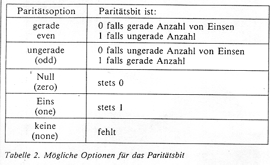

Bit für Bit
Serielle Schnittstelle, Rolf Keller, c't 1983, Heft 12, S.82ff
(Veröffentlichung mit freundlicher Genehmigung der c't)
Die verschiedenen Komponenten eines Computersystems verkehren miteinander über Schnittstellen. Selbstverständlich müssen bestimmte Konventionen eingehalten werden, damit die Datenkommunikation reibungslos ablaufen kann. Dieser c't-Grundlagenbeitrag zeigt, worauf es beim Einsatz serieller Schnittstellen ankommt.
Die TTY-Schnittstelle
Geht man von dem Zeitbegriff der heutigen schnellebigen Mikroelektronik aus, so kann man die TTY-Schnittstelle schon fast als vorgeschichtlich bezeichnen. Sie ist nämlich schon mehr als 100(!) Jahre alt. Ursprünglich wurde sie für das Fernschreibnetz entwickelt (TTY = Teletype = Fernschreiber).
Beide Stationen werden in Form eines geschlossenen Stromkreises miteinander verbunden (siehe Bild 1), wobei im Ruhezustand ein konstanter Gleichstrom von z.B. 20mA fließt. Daher wird die TTY-Schnittstelle oft nach als '20-mA-Stromschnittstelle' bezeichnet. Die Übertragung von Daten geschieht nun einfach so, daß der Sender den Schleifenstrom in einem bestimmten Rhythmus unterbricht. Beim altgedienten Fernschreiber geschieht dies durch einen mecha-nischen Unterbrecherkontakt. Der Empfänger erkennt die rhythmischen Unterbrechungen mit Hilfe einer Art Relaisspule und setzt sie wieder in mechanische Bewegung um. Man beachte, daß mit einer nur 2-adrigen Leitung ohne irgendeine Umschaltung in beide Richtungen ge-arbeitet werden kann. Allerdings geht dies nicht gleichzeitig: einer der beiden Sender muß stets in Ruhestellung sein (Unterbrecherkontakt geschlossen). Diese Art des eingeschränkten Zweirichtungsbetriebs nennt man Halbduplexverfahren. Für einen echten Zweirichtungsbetrieb (Vollduplex) benötigt man getrennte Stromschleifen für Senden und Empfang.
Wird die TTY-Schnittstelle bei Computerperipheriegeräten benutzt, so verwendet man natürlich moderne Halbleiterbauelemente: der Unterbrecherkontakt wird durch einen Schalttransistor ersetzt, die Empfangsspule durch einen Optokoppler (siehe Bild 2). Man unterscheidet zwischen aktiven und passiven TTY-Schnittstellen. Eine aktive Schnittstelle enthält eine Quelle für den Schleifenstrom, eine passive dagegen nicht. In Bild 2 ist der Sender aktiv, der Empfänger passiv. Normalerweise sollten immer eine passive mit einer aktiven Schnittstelle zusammen eine Stromschleife bilden.
Das serielle Datenformat
Wie sieht nun der oben beschriebene Rhythmus der Stromunterbrechungen während der Datenübertragung aus? Auf der Leitung liegt zu jedem Zeitpunkt nur ein Bit (siehe Bild 3). Die einzelnen, zu einem Zeichen gehörenden Bits werden der Reihe nach ('seriell') gesendet. Jedem zu sendenden Zeichen wird ein START-Bit (log. 0) vorangestellt. Danach folgen die Bits des Zeichens selbst (z. B. sieben Bit des ASCII-Codes). Als Abschluß folgt das Paritätsbit (siehe unten) und ein bis zwei STOP-Bits (log. 1), worauf die Leitung wieder im Ruhezustand ist.
Logikpegel, Leitungspegel und die zugehörigen englischen Bezeichnungen sind in Tabelle 1 dargestellt. Jedes Bit liegt für die gleiche, feste Zeitspanne auf der Leitung. Sie wird angegeben in der Einheit 'Baud' (nach Baudot, einem Pionier der Fernschreibertechnik), wobei gilt: 1 Baud = 1 Bit pro Sekunde. Damit ist die Geschwindigkeit der Datenübertragung jedoch noch nicht festgelegt, denn zwischen den einzelnen Zeichen kann die Leitung ja beliebig lange im Ruhezustand verharren.
Die maximale Datenrate ergibt sich, wenn die einzelnen Zeichen so dicht aufeinanderfolgen, daß das START-Bit eines Zeichens direkt an das letzte STOP-Bit des vorangehenden Zeichens angrenzt. Bei der Übertragung von 7-Bit-ASCII-Zeichen mit je einem START-, Paritäts- und STOP-Bit ergibt sich beispielsweise bei einer Baudrate von 300 Baud eine maximal erreichbare Datenrate von 300/(7+3) = 3O Zeichen pro Sekunde.
Sender und Empfänger: stillschweigende Übereinkunft
Das zuvor beschriebene Datenformat laßt dem Sender verschiedene Möglichkeiten offen: unterschiedliche Baudraten sind möglich; die Anzahl der STOP-Bits kann variieren; das Paritätsbit kann vorhanden sein oder fehlen; schließlich gibt es verschiedene Codes für die Daten selbst (ASCII, EBCDI und andere). Der Empfänger kann nur dann erfolgreich arbeiten, wenn er das vom Sender verwendete Datenformat 'kennt'.
Obwohl man theoretisch durch Beobachtung eines längeren Datenstroms das Format herausfinden kann, wird doch in der Regel so verfahren, daß Sender und Empfänger jeder für sich per Hardware (z. B. DIL-Schalter) oder per Software auf das gleiche Datenformat eingestellt werden. Sie verstehen sich dann von selbst in stillschweigender Übereinkunft.
Übereinstimmende Baudraten: ein Problem
Um eine vorgegebene Baudrate zu erreichen, wird gewöhnlich sowohl im Sender wie im Empfänger mit einem Oszillator eine feste Bezugsfrequenz erzeugt. Es kann nicht ausbleiben, daß sich die Bezugsfrequenzen (und somit die effektiven Baudraten) von Sender und Empfänger um ein Weniges voneinander unterscheiden. Bei einer Abweichung von 1 Promille würden Sender und Empfänger nach 1000 Bits um 1 Bit 'auseinandergelaufen' sein. Der Empfänger würde dann völlig falsche Daten empfangen.
Um dies.. Problem zu umgehen, werden START- und STOP-Bits verwendet. Der Empfänger synchronisiert sich selbst zu Beginn jedes Zeichens neu. Ist die Leitung im Ruhezustand, so beobachtet er sie, bis er irgendwann die Anfangsflanke (von log. 1 nach log. 0) eines START-Bits erkennt. Diesen Zeitpunkt benutzt er als Anfangsmarke und fragt nun die Leitung für jedes erwartete Bit des laufenden Zeichens einmal ab. Die Zeitpunkte der Abfrage legt der Empfänger dabei so, daß sie in die Mitte der einzelnen Bits fallen. Das Datenbit 0 wird also 1,5 Bitzeiten nach der Anfangsflanke des START-Bits abgefragt, das Datenbit 1 2,5 Bitzeiten nach der Anfangsflanke des START-Bits und so weiter ...
Beim Erreichen des STOP-Bits beginnt der Empfänger wieder frei zu laufen und wartet auf das nächste START-Bit. Hier zeigt sich die Notwendigkeit eines STOP-Bits. Falls das letzte Bit eines Zeichens log. 0 ist, konnte der Empfänger es nicht von dem eventuell unmittelbar folgenden START-Bit des nächsten Zeichens unterscheiden. Daher muß jedem START-Bit (log. 1) stets ein entgegengesetzter Pegel (log. 1) vorangehen. Dieser wird von einem STOP-Bit geliefert. Da die Leitung im Ruhezustand denselben Pegel hat (siehe Tabelle 1), funktioniert dieses Verfahren auch nach längeren Übertragungspausen. Es garantiert die korrekte Funktion auch bei nicht exakt übereinstimmenden Bandraten und bei den auf der Leitung unvermeidlich auftretenden Phasenfehlern und Kurvenformverzerrungen, (wegen der Abfrage in Bit-Mitte). Da der Empfänger stets nur für die Dauer eines Zeichens annähernd synchron zum Sender läuft und diesen Synchronismus am Ende jedes Zeichens wieder aufgibt, bezeichnet man dieses Übertragungsverfahren als Asynchronbetrieb. Der ebenfalls mögliche Synchronbetrieb hat im PersonaIcomputerbereich bisher keine Bedeutung, er wird daher hier nicht weiter behandelt.
Die STOP-Bits haben neben der eben geschilderten manchmal noch eine weitere Funktion: Sie geben dem Empfängergerät etwas Zeit, um das gerade empfangene Zeichen zu verarbeiten (zum Beispiel zu drucken). Aus diesem Grunde werden bisweilen 1,5 oder 2 STOP-Bits verwendet; man erhöht so diese Reservezeit etwas. Natürlich gibt es in der Digitaltechnik nicht 1,5 Bits; die Angabe soll hier bedeuten, daß das STOP-Bit 1,5 Bit-Zeiten lang ist.
Kontrolle statt Vertrauen: Paritätsbit
Wie schon erwähnt, kann zusätzlich zu den Datenbits noch ein Paritätsbit übertragen werden. Dieses Bit ermöglicht eine primitive Fehlerkontrolle. Wird mit gerader Parität gearbeitet, so setzt der Sender das Paritätsbit auf log. 1, falls das zu sendende Zeichen eine ungerade Anzahl von gesetzten (log.1) Bits enthält. Bei einer geraden Anzahl wird das Paritätsbit auf log. 0 gesetzt. Der Empfänger prüft nun nach der gleichen Vorschrift, ob das Paritätsbit zu den Datenbits 'paßt'. Falls bei der Übertragung eines der Datenbits verfälscht worden ist, so ist dies also vom Empfänger erkennbar. Nicht erkennbar ist jedoch, welches das verfälschte Bit ist. Ist eine gerade Anzahl von Bits verfälscht, so bleibt dies unerkannt.
Die verschiedenen Möglichkeiten, ein Paritätsbit zu senden, sind in Tabelle 2  dargestellt. Beim Empfänger ist es meist möglich, die Paritätsprüfung auszuschalten. Dennoch muß der Empfänger in jedem Fall das Vorhandensein des Paritätsbits berücksichtigen, da es ja jedes Zeichen um ein Bit verlängert Um das STOP-Bit zum richtigen Zeitpunkt erwarten zu können, muß also der Empfänger stets nach einer der Möglichkeiten von Tabelle 2 passend zum Sender eingestellt sein. Ob das empfangene Paritätsbit aber geprüft wird, ist eine andere Sache.
Eine weitere Prüfungsmöglichkeit bietet das STOP-Bit. Liegt es nicht auf log. 1, so betrachtet der Empfänger dies als 'frame error' (engl. frame = Rahmen, gemeint ist de, Rahmen, den START- und STOP-Bit mit die Datenbits bilden).
RS-232-C: eine moderne serielle Schnittstelle
Diese moderne Form der seriellen Schnittstelle ist unter verschiedenen Namen bekannt: CCITT V.24, EIARS-232-C, DIN 66020. Exakt gleich sind diese Normen jedoch nicht. Die RS-232-C-Schnittstelle wurde ursprünglich in der Großcomputerei verwendet, um Rechner und Terminals an ein Modem anzuschließen (Bild 4). Auf diese Weise werden z.B. die Terminals in einem Reisebüro mit dem entfernten Zentralrechner verbunden.
Man beachte in Bild 4, daß die RS232-C-Verbindung nur das kurze Stück zwischen Rechner beziehungsweise Terminal und Moden bildet, nicht die eigentliche Fernübertragungstrecke. Für diese Anwendung wurden die genannten Normen konzipiert. Sie definieren deshalb mehr als 20 Adern pro Leitung mit vielen Sonderfunktionen.
In der Mikrocomputerei werden RS232-C-Verbindungen in der Regel zum Anschluß von Peripheriegeräten (zum Beispiel Bildschirmterminal oder Drucker) an einen Rechner benutzt. Modems sind dabei nicht beteiligt. Daher entfällt ein Großteil der in den Normen vorgesehenen Signaladern. Die in der Mikrocomputerei verwendeten Signale sind in Tabelle 3 zusammengestellt. Physikalisch ist die RS-232-C:Schnittstelle eine Spannungsschnittstelle (im Gegensatz zur TTY-Stromschnittstelle); für jede Richtung ist eine Signalader erforderlich, dazu kommt eine gemeinsame Masseleitung. Halbduplexbetrieb in der Form wie bei der TTY-Schnittstelle (siehe Bild 1) ist nicht möglich. Als normgerechte Steckverbindung verwendet man den 25pol. Subminiatur-D-Stecker.
Für das serielle Datenformat auf der Leitung (Pro 2 u. 3) gilt alles oben aber die TTY-Schnittstelle Gesagte. Die genormten Spannungspegel sind Tabelle 1 zu entnehmen. Die übrigen Signalleitungen (Pin 4, 5, 6 u. 20) werden als Handshake-Signale etc. benutzt. Sie arbeiten mit denselben Signalpegeln wie die Datenleitungen (Pin 2 u 3).
Wie aus Tabelle 3 zu erkennen, gibt es zwei unterschiedliche RS-232-CSchnittstellen: die Modemschnittstelle und die Terminalschnittstelle. Ein Gerät mit einer Modemschnittstelle kann man Pin für Pin mit einem Gerät mit Terminalschnittstelle verbunden. Beispielsweise ist Pin 2 bei der Terminalschnittstelle der Ausgang für die seriellen Daten, bei der Modemschnittstelle ist Pin 2 der zugehörige Eingang. In der Regel besitzt ein Personalcomputer eine Modemschnittstelle, die anzuschließenden Peripheriegeräte dagegen eine Terminalschnittstelle.
Will man zwei Geräte mit gleichnamigen Schnittstellen verbinden, so müssen im Kabel die Adern innerhalb der Leitungspaare 2,3 sowie 4,5 und 6,20 gekreuzt werden. Ein solches Kabel wird als Nullmodemkabel bezeichnet. Stets muß ja ein Ausgangspin des einen Geräts auf einen Eingangspin des anderen Geräts treffen (Tabelle 3).
Serielle Interfacebausteine: hilfreich
Prinzipiell kann man das serielle Datenformat (Bild 3) allein mittels Software erzeugen, indem man ein Ausgangsbit eines Ports mit Hilfe von Verzögerungsschleifen zu den richtigen Zeitpunkten auf 0 oder 1 setzt. Der Datenempfang per Software ist schon etwas schwieriger zu bewältigen In der Praxis verwendet nan meist einen seriellen Interfacebaustein, UART (Universal Asynchronous Receiver and Transmitter = universeller asynchoner Empfänger und Sender) genannt.
Ein solcher Baustein wird an den Rechnerbus angeschlossen und 'unterhält' sich mit der CPU in 8-Bit-paralleler Weise. Die Umwandlung parallel-seriell und umgekehrt sowie das Einfügen von START-, STOP- und Paritätsbits geschehen automatisch im UART. Die gewünschte Betriebsart des UART wird je nach Typ und Schaltung durch Hardware (zum Beispiel DIL-Schalter) oder Software eingestellt.
Zusätzlich zum UART sind noch Pegelwandler erforderlich, die die 5 V-Logik-Pegel des UART in die Leitungspegel (TTY oder RS-232C) umsetzen und umgekehrt. Außerdem muß der UART eine Bezugsfrequenz für die Baudrate (zum Beispiel in einem Quarzoszillator erzeugt) zugeführt werden.
Übertragungsprozeduren
Bisher wurde nur beschrieben, wie eine Folge von Zeichen hintereinander seriell übertragen werden kann. Nicht jedes Gerät ist aber zu jedem Zeitpunkt zum Empfang von Daten bereit. Sendet der Sender, während der Empfänger nicht bereit ist, so gehen Daten verloren. Ein Drucker kann beispielsweise die Zeichen einer Zeile bei 9600 Baud in einer Zeit von 80msec empfangen und in seinen eingebautem Puffer ablegen. Für den Druck der Zelle benötigter aber 800msec. Der Puffer würde also bald überlaufen, wenn der Sender nicht zwischendurch Übertragungspausen einlegte. Dies wird erreicht durch eine geeignete Übertragungsprozedur.
Dafür gibt es grundsätzlich zwei Möglichkeiten: Rückkanal und Handshake. Bei Verwendung des Rückkanals kann der Empfänger im VoIlduplexverfahren in der Gegenrichtung dem Sender mitteilen, ob momentan gesendet werden darf. Hierzu werden bestimmte Steuerzeichen vereinbart, z. B. XON und XOFF, die aber den Rückkanal als Daten gesendet werden. Dieses Verfahren arbeitet ganz und gar auf Softwarebasis.
Bei Verwendung der Handshakesignale (bei der TTY-Schnittstelle nicht vorhanden) werden Sende- und Empfangsbereitschaft als Einzelbitsignale über zusätzliche Leitungsadern übertragen. Dieses Verfahren kann sowohl durch Software als auch durch Hardware realisiert werden.
Praktischer Anschluß: ein Problem für sich
Die Aufgabe, zwei Geräte mit seriellen Schnittstellen miteinander zu verbinden, erfordert oft einigen Arbeitsaufwand. Auf dem Markt findet man eine Vielfalt von unterschiedlichen Schnittstellen mit mangelhafter Dokumentation, die alle als ‚voll normgerecht' deklariert sind. Mit Sicherheit verlassen kann man sich eigentlich nur auf das serielle Datenformat (Bild 3) und auf die Leitungspegel (Tabelle 1). Insbesondere bei Steckerbelegungen und Übertragungsprozeduren gibt es viele ungenormte Variationen.
Vor dem eigentlichen Anschließen sollte man sich soviel Information wie möglich beschaffen: durch Sichten aller greifbaren Unterlagen, durch Studieren der Geräte und zuletzt durch Probieren. Das probeweise Zusammenschalten ohne genaue Kenntnis der Pinbelegungen birgt aber Gefahren: treffen zwei aktive TTY-Schnittstellen oder zwei RS-232-C-Ausgänge aufeinander, so kann dies zu Defekten führen.
Grundsätzlich müssen sowohl Hardware als auch Software berücksichtigt werden. Aber auch hier ist Mißtrauen geboten: Hat beispielsweise ein Rechner eine RS232-CSchntttstelle mit allen Handshakesignalen nach Tabelle 3, so kann es dennoch möglich sein, daß die im ROM vorhandenen Treiberprogramme für die Schnittstelle weder den Rückkanal noch irgendein Handshakesignal benutzen.
Generell empfiehlt sich ein Vorgehen in vier Schritten:
| 1. |
Einstellen von Bandrate, Paritätsbit, STOP-Bits. Niedrige Bandraten sind für erste Versuche
empfehlenswert ; mehr STOP-Bits beim Sender als beim Empfänger schaden nichts. |
| 2. |
Verbindung der Geräte nur für eine Signalrichtung, zum Beispiel vom Rechner zum Drucker.
Zunächst Weglassen aller Leitungen für Handshake und Rückkanal. |
| 3. |
Inbetriebnahme dieser Verbindung, wenn nötig Korrektur von 1. |
| 4. |
Nachdem einzelne Zeichen korrekt übertragen werden können, vervollständigt man die
Verbindung mit den zusätzlichen Adern für Rückkanal und/oder Handshake. Bei einigen Geräten
ist schon nach Punkt 3. eine zufriedenstellende Arbeitsweise erreicht. Bei anderen Geräten
genügt ein, Geschwindigkeitsdrosselung durch Herabsetzen der Baudrate, um ohne besondere
Übertragungsprozedur auszukommen. |